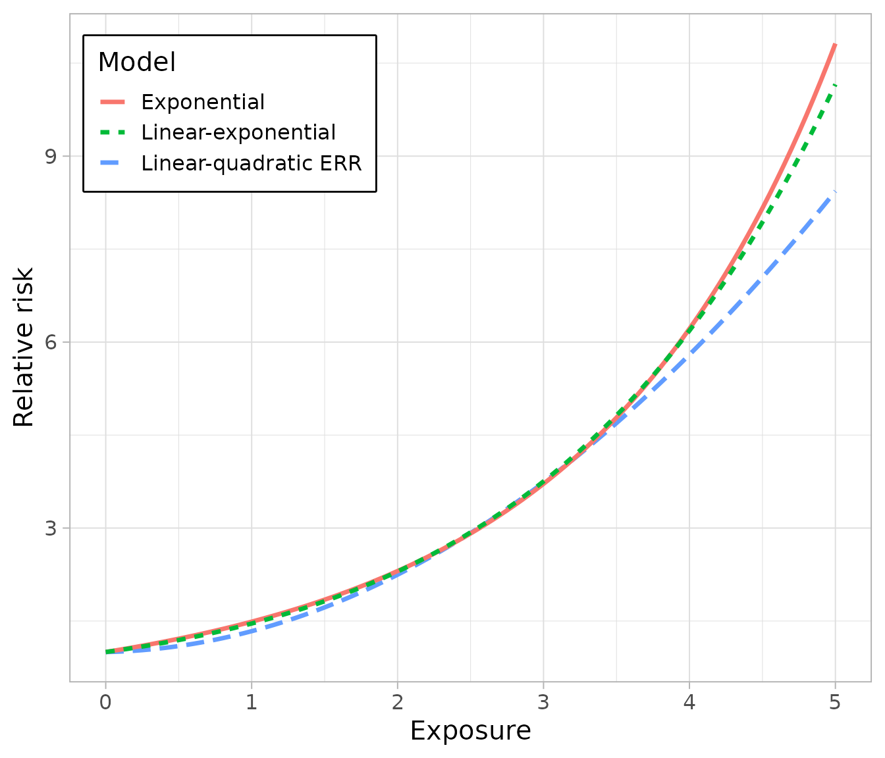

library(ameras)
#> Loading required package: nimble
#> nimble version 1.4.2 is loaded.
#> For more information on NIMBLE and a User Manual,
#> please visit https://R-nimble.org.
#>
#> Attaching package: 'nimble'
#> The following object is masked from 'package:stats':
#>
#> simulate
#> The following object is masked from 'package:base':
#>
#> declare
library(ggplot2)
data(data, package="ameras")Introduction
For non-Gaussian families, three relative risk models for the main exposure are supported, the usual exponential model the linear(-quadratic) excess relative risk (ERR) model and the linear-exponential model This vignette illustrates fitting the three models using regression calibration for logistic regression, but the same syntax applies to all other settings.
Exponential relative risk
The usual exponential relative risk model is given by
,
where the quadratic and effect modification terms are optional (not fit
by setting deg=1 and not passing anything to
M, respectively). This model is fit by setting
model="EXP" as follows:
fit.ameras.exp <- ameras(Y.binomial~dose(V1:V10, deg=2, model="EXP")+X1+X2,
data=data, family="binomial", methods="RC")
#> Fitting RC
summary(fit.ameras.exp)
#> Call:
#> ameras(formula = Y.binomial ~ dose(V1:V10, deg = 2, model = "EXP") +
#> X1 + X2, data = data, family = "binomial", methods = "RC")
#>
#> Total run time: 0.3 seconds
#>
#> Runtime in seconds by method:
#>
#> Method Runtime
#> RC 0.3
#>
#> Summary of coefficients by method:
#>
#> Method Term Estimate SE
#> RC (Intercept) -0.94461 0.08409
#> RC X1 0.44552 0.07667
#> RC X2 -0.33376 0.09601
#> RC dose 0.37904 0.10388
#> RC dose_squared 0.01943 0.02750
#>
#> Note: confidence intervals not yet computed. Use confint() to add them.Linear excess relative risk
The linear excess relative risk model is given by
,
where again the quadratic and effect modification terms are optional. In
this case, no degree needs to be specified. This model is fit by setting
model="ERR" as follows:
fit.ameras.err <- ameras(Y.binomial~dose(V1:V10, deg=2, model="ERR")+X1+X2,
data=data, family="binomial", methods="RC")
#> Fitting RC
summary(fit.ameras.err)
#> Call:
#> ameras(formula = Y.binomial ~ dose(V1:V10, deg = 2, model = "ERR") +
#> X1 + X2, data = data, family = "binomial", methods = "RC")
#>
#> Total run time: 0.3 seconds
#>
#> Runtime in seconds by method:
#>
#> Method Runtime
#> RC 0.3
#>
#> Summary of coefficients by method:
#>
#> Method Term Estimate SE
#> RC (Intercept) -0.87359 0.09759
#> RC X1 0.44587 0.07672
#> RC X2 -0.33552 0.09610
#> RC dose 0.04878 0.21283
#> RC dose_squared 0.28763 0.08100
#>
#> Note: confidence intervals not yet computed. Use confint() to add them.Linear-exponential relative risk
The linear-exponential relative risk model is given by
,
where the effect modification terms are optional. This model is fit by
setting model="LINEXP" as follows:
fit.ameras.linexp <- ameras(Y.binomial~dose(V1:V10, model="LINEXP")+X1+X2,
data=data, family="binomial", methods="RC")
#> Fitting RC
summary(fit.ameras.linexp)
#> Call:
#> ameras(formula = Y.binomial ~ dose(V1:V10, model = "LINEXP") +
#> X1 + X2, data = data, family = "binomial", methods = "RC")
#>
#> Total run time: 0.4 seconds
#>
#> Runtime in seconds by method:
#>
#> Method Runtime
#> RC 0.4
#>
#> Summary of coefficients by method:
#>
#> Method Term Estimate SE
#> RC (Intercept) -0.9326 0.08592
#> RC X1 0.4456 0.07668
#> RC X2 -0.3343 0.09603
#> RC dose_linear 0.3255 0.11919
#> RC dose_exponential 0.3455 0.10814
#>
#> Note: confidence intervals not yet computed. Use confint() to add them.Comparison between models
To compare between models, it is easiest to do so visually:
ggplot(data.frame(x=c(0, 5)), aes(x))+
theme_light(base_size=15)+
xlab("Exposure")+
ylab("Relative risk")+
labs(col="Model", lty="Model") +
theme(legend.position = "inside",
legend.position.inside = c(.2,.85),
legend.box.background = element_rect(color = "black", fill = "white", linewidth = 1))+
stat_function(aes(col="Linear-quadratic ERR", lty="Linear-quadratic ERR" ),fun=function(x){
1+fit.ameras.err$RC$coefficients["dose"]*x + fit.ameras.err$RC$coefficients["dose_squared"]*x^2
}, linewidth=1.2) +
stat_function(aes(col="Exponential", lty="Exponential"),fun=function(x){
exp(fit.ameras.exp$RC$coefficients["dose"]*x + fit.ameras.exp$RC$coefficients["dose_squared"]*x^2)
}, linewidth=1.2) +
stat_function(aes(col="Linear-exponential", lty="Linear-exponential"),fun=function(x){
1+fit.ameras.linexp$RC$coefficients["dose_linear"]*x * exp(fit.ameras.linexp$RC$coefficients["dose_exponential"]*x)
}, linewidth=1.2)